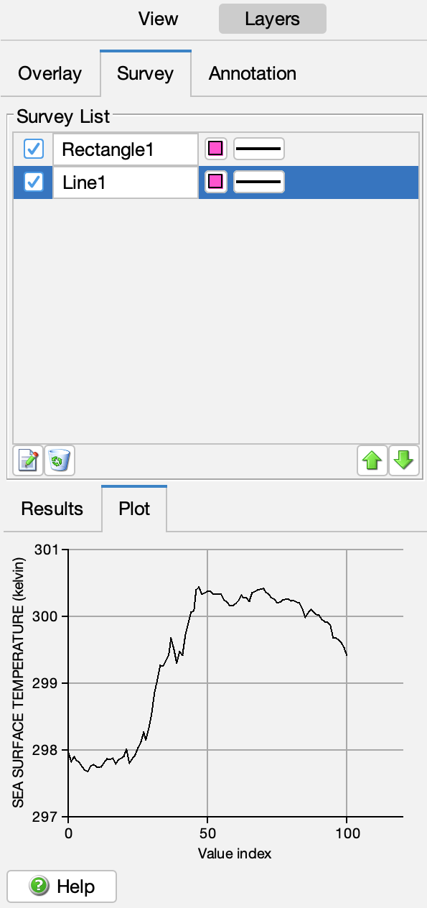

CoastWatch Data Analysis Tool Help: Data Surveys
In this section:
What are surveys?
Surveys allow you to compute statistics on areas of the data
view. Performing a data survey results in a printout of
statistics, a plot of the survey data, and an outline of the
survey area on the data view. Surveys can be performed at a
point, along a line, or within a rectangle or polygon.
Survey modes
The following figure shows the current list of surveys, and the
survey results and plot tabs:

You can perform a survey on the data using the CDAT toolbar buttons as
follows:
- Point
- A single point is surveyed, with no statistics or plot. A point
survey is a good way to mark a certain position and easily be able
to recall its data value, such as for an ocean buoy.
 Line
Line- A straight line is surveyed, with statistics and a plot of the
data values along the line. A line survey simulates an airplane or
ship track of the data values, and is useful for gradient and front
analysis.
 Rectangle
Rectangle- A rectangular box is surveyed, with statistics and a plot of the
histogram bins within the box. A box survey is useful for a
clustering analysis to show groups of similar data values in an area
as peaks in the histogram.
- Polygon
- A polygon is surveyed, with statistics and a plot of the
histogram bins within the polygon. Polygon surveys are similar to
box surveys, but can help when the area has an irregular shape.
Survey list
Once added to the survey list, surveys are similar to
overlays, in that they can be modified, renamed, set visible or
invisible, moved up or down in the list, and removed — see the overlays section for details.
Select a survey in the list to recall its specific data in the
Results and Plot tabs.
← Back to overview